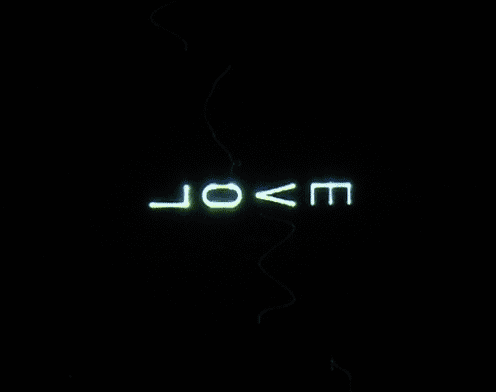
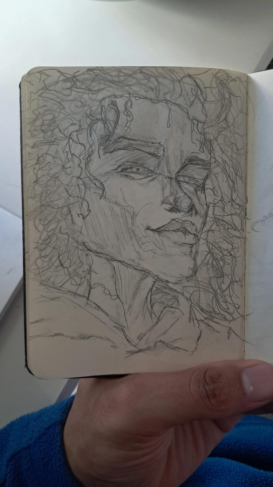

About Me

Sinds ik klein was, heb ik een diepe interesse voor animatie, gaande van Disneyfilms tot anime zoals Dragon Ball Z. Ik herinner me nog levendig de eerste keer dat ik Sneeuwwitje zag met mijn grootmoeder, op een oude videoband van mijn grootouders. Dat gaf me een voorproefje van hoe een film intense emoties kan oproepen. Ik denk dat daar mijn liefde voor art en vooral animatie is ontstaan.
Ik ben wat je noemt een professioneel daydreamer met andere woorden: iemand die nooit stopt met dromen (letterlijk) en fantaseren over verhalen. Mijn “dumbass” blik kan eruitzien alsof ik gewoon door het raam staar, terwijl er in werkelijkheid in mijn hoofd een intense romance plaatsvindt tussen 2 original characters.

WHAT INSPIRES ME
Featured drawings
A glimpse of my favorite pieces.
More in the gallery.


